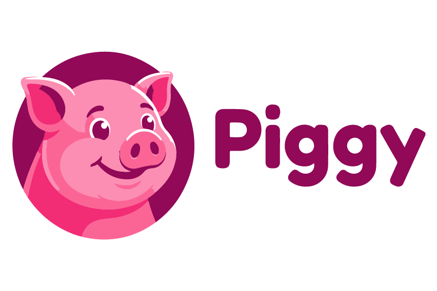

Piggy App — Respaldado por Granja Valle Morales
1.1. GRANJA VALLE MORALES DEL VALLE S.A.S., sociedad legalmente constituida conforme a las leyes de la República de Colombia, identificada con NIT No. 900.860.384-7, representada legalmente por OSCAR IVÁN MÁRQUEZ MORALES, identificado con cédula de ciudadanía No. 14.590.206, quien para efectos del presente contrato actuará en calidad de operadora de la plataforma digital PIGGY APP y de comercializadora del producto agropecuario derivado de la operación, denominándose en adelante EL OPERADOR PRODUCTIVO, LA PLATAFORMA Y COMERCIALIZADORA; y 1.2. EL USUARIO, entendido como la persona natural o jurídica que acepta electrónicamente los términos del presente contrato mediante la plataforma digital PIGGY APP; quienes conjuntamente podrán denominarse las “PARTES”, celebran el presente CONTRATO DE OPERACIÓN AGROPRODUCTIVA DIGITAL, CUSTODIA, TRAZABILIDAD Y COMERCIALIZACIÓN, el cual se regirá por las cláusulas que a continuación se expresan y en general por las disposiciones aplicables a la materia que trata este contrato.
2.1. Que LA PLATAFORMA Y COMERCIALIZADORA administra una plataforma digital denominada “PIGGY APP”, orientada a la gestión, seguimiento y trazabilidad de operaciones agroproductivas relacionadas con procesos de crianza, engorde y comercialización de porcinos.
2.2. Que EL OPERADOR PRODUCTIVO desarrolla actividades agropecuarias relacionadas con la custodia, alimentación, manejo técnico, control sanitario y desarrollo productivo de porcinos dentro de predios destinados a la actividad agropecuaria.
2.3. Que el modelo desarrollado mediante la plataforma digital se encuentra respaldado en activos agropecuarios reales, individualizables y sometidos a procesos productivos verificables y trazables.
2.4. Que EL USUARIO manifiesta su interés en vincularse al modelo agroproductivo mediante la adquisición de un activo agropecuario real vinculado a un ciclo productivo y comercial administrado a través de la plataforma digital.
2.5. Que las PARTES reconocen expresamente que el presente modelo corresponde a una operación agrocomercial sustentada en activos reales y procesos productivos verificables, y que cualquier resultado económico derivado de la operación dependerá del comportamiento real de la actividad agropecuaria y de las condiciones del mercado.
2.6. Que las PARTES reconocen igualmente que la actividad agropecuaria se encuentra expuesta a riesgos propios del sector, incluyendo contingencias sanitarias, fluctuaciones comerciales, variabilidad de precios, mortalidad animal y demás factores inherentes a la actividad productiva.
2.7. Que las PARTES manifiestan que el presente contrato tiene como finalidad regular las condiciones operativas, productivas, comerciales y de trazabilidad aplicables al funcionamiento del modelo agroproductivo digital desarrollado mediante la plataforma PIGGY APP.
Para efectos del presente contrato las partes aceptan los términos, definiciones, condiciones y especificaciones establecidas a continuación:
3.1. Activo Agroproductivo: Corresponde al porcino individualizable y trazable que hace parte del proceso productivo desarrollado por EL OPERADOR PRODUCTIVO, respaldado en registros técnicos, sanitarios y operativos verificables.
3.2. Ciclo Productivo: Periodo durante el cual el Activo Agroproductivo se encuentra vinculado a procesos de crianza, custodia, alimentación, engorde, manejo sanitario y posterior comercialización dentro de la operación agroproductiva.
3.3. Plataforma Digital: Corresponde a la aplicación tecnológica denominada PIGGY APP, administrada por LA PLATAFORMA Y COMERCIALIZADORA, mediante la cual se gestiona la vinculación de usuarios, trazabilidad operativa, seguimiento del proceso productivo y administración general de la operación agrocomercial.
3.4. Resultado Económico: Corresponde al valor variable derivado del proceso de comercialización del Activo Agroproductivo, calculado conforme a las condiciones reales de producción, costos operativos, comportamiento del mercado y demás variables asociadas a la actividad agropecuaria. El Resultado Económico no constituye rentabilidad fija, rendimiento garantizado ni utilidad previamente asegurada.
El presente contrato tiene por objeto regular la vinculación de EL USUARIO a la operación agrocomercial desarrollada mediante la plataforma digital PIGGY APP, administrada por LA PLATAFORMA Y COMERCIALIZADORA, a través de la adquisición de un Activo Agroproductivo real, individualizable y trazable, vinculado a un proceso de crianza, custodia, alimentación, manejo sanitario, engorde y posterior comercialización desarrollado por EL OPERADOR PRODUCTIVO. Para el cumplimiento del objeto contractual, LA PLATAFORMA Y COMERCIALIZADORA, EL OPERADOR PRODUCTIVO y EL USUARIO actuarán con autonomía técnica, administrativa y operativa dentro de las funciones que les corresponden conforme a la naturaleza del modelo agroproductivo y de acuerdo con las obligaciones establecidas en el presente contrato. La operación regulada mediante el presente contrato comprende principalmente: 4.1. la vinculación del usuario al modelo agroproductivo mediante plataforma digital, 4.2. la identificación y trazabilidad del Activo Agroproductivo, 4.3. la administración y seguimiento del ciclo productivo, 4.4. la custodia, alimentación y manejo sanitario del activo, 4.5. la comercialización del producto derivado de la operación agropecuaria, 4.6. la administración operativa y documental de la plataforma digital, 4.7. y la liquidación económica derivada del proceso de comercialización conforme a las condiciones reales de producción y mercado.
PARÁGRAFO PRIMERO. Las PARTES reconocen expresamente que el presente modelo corresponde a una operación agroproductiva respaldada en activos reales y procesos productivos verificables, y no constituye actividad financiera, mecanismo de captación de recursos, inversión colectiva ni esquema de rentabilidad garantizada.
PARÁGRAFO SEGUNDO. EL USUARIO declara conocer y aceptar que cualquier Resultado Económico derivado de la operación dependerá exclusivamente del comportamiento real del proceso de engorde, los costos operativos, las condiciones del mercado y los riesgos propios de la actividad agropecuaria.
LA PLATAFORMA Y COMERCIALIZADORA se obliga para con EL USUARIO y EL OPERADOR PRODUCTIVO a:
5.1. Administrar la plataforma digital PIGGY APP y garantizar razonablemente su funcionamiento operativo, tecnológico y documental.
5.2. Gestionar la vinculación de usuarios al modelo agroproductivo conforme a las condiciones establecidas en el presente contrato y demás políticas aplicables.
5.3. Mantener mecanismos razonables de identificación, registro y trazabilidad de las operaciones realizadas mediante la plataforma digital.
5.4. Facilitar al usuario acceso a la información relacionada con el Activo Agroproductivo, el ciclo productivo y la trazabilidad operativa de la operación.
5.5. Mantener disponibles dentro de la plataforma los documentos, políticas, términos y condiciones aplicables al funcionamiento del modelo.
5.6. Gestionar operativamente la comercialización del producto derivado del proceso agroproductivo desarrollado por EL OPERADOR PRODUCTIVO.
5.7. Llevar registros operativos, comerciales y documentales relacionados con las operaciones desarrolladas mediante la plataforma digital.
5.8. Implementar controles razonables orientados a la validación de identidad, monitoreo transaccional y prevención de operaciones inusuales conforme a las políticas internas de cumplimiento.
5.9. Administrar la información operativa y comercial derivada del funcionamiento de la plataforma digital.
5.10. Informar al usuario sobre novedades relevantes relacionadas con el funcionamiento general de la operación agroproductiva y comercial.
5.11. Realizar la liquidación económica derivada del proceso de comercialización conforme a las condiciones reales del mercado, costos operativos y demás variables propias de la actividad agropecuaria.
5.12. Mantener mecanismos razonables de seguridad de la información y protección de datos personales conforme a la normatividad aplicable.
5.13. Garantizar que la información suministrada dentro de la plataforma corresponda razonablemente con la operación agroproductiva efectivamente desarrollada.
5.14. Conservar soportes documentales, operativos y comerciales relacionados con la trazabilidad y funcionamiento del modelo agroproductivo.
PARÁGRAFO PRIMERO. LA PLATAFORMA Y COMERCIALIZADORA desarrollará actividades de administración tecnológica, coordinación operativa y comercialización dentro del modelo agroproductivo, sin que ello implique el ejercicio de actividad financiera, captación de recursos del público o administración de productos de inversión.
PARÁGRAFO SEGUNDO. LA PLATAFORMA Y COMERCIALIZADORA no garantiza resultados económicos mínimos, rentabilidades fijas ni utilidades aseguradas derivadas de la operación agroproductiva regulada mediante el presente contrato.
EL OPERADOR PRODUCTIVO se obliga para con LA PLATAFORMA Y COMERCIALIZADORA y EL USUARIO a:
6.1. Desarrollar el proceso agroproductivo relacionado con la crianza, custodia, alimentación, manejo técnico, control sanitario y engorde de los Activos Agroproductivos vinculados al modelo.
6.2. Mantener los Activos Agroproductivos dentro de predios destinados al desarrollo de actividades agropecuarias y bajo condiciones razonables de manejo técnico y sanitario.
6.3. Implementar protocolos de alimentación, bioseguridad, control veterinario y manejo sanitario acordes con la naturaleza de la actividad agropecuaria desarrollada.
6.4. Mantener mecanismos de identificación y trazabilidad que permitan individualizar razonablemente los Activos Agroproductivos vinculados a la operación.
6.5. Llevar registros relacionados con el ciclo productivo, evolución del activo, controles sanitarios y demás aspectos relevantes del proceso agropecuario.
6.6. Permitir el seguimiento operativo y documental de la trazabilidad de los Activos Agroproductivos mediante los mecanismos implementados dentro de la plataforma digital.
6.7. Informar oportunamente a LA PLATAFORMA Y COMERCIALIZADORA sobre contingencias relevantes que puedan afectar el desarrollo del ciclo productivo o la comercialización del producto.
6.8. Mantener controles razonables sobre inventarios, capacidad productiva y correspondencia entre activos disponibles y operaciones activas dentro del modelo agroproductivo.
6.9. Cumplir las disposiciones sanitarias y regulatorias aplicables a la actividad agropecuaria desarrollada, incluyendo aquellas relacionadas con registros, movilización y control sanitario de animales.
6.10. Abstenerse de sustituir Activos Agroproductivos sin trazabilidad suficiente o sin los correspondientes registros operativos y documentales que permitan mantener la identificación y seguimiento del activo dentro del ciclo productivo.
6.11. Conservar soportes técnicos, sanitarios y operativos relacionados con el proceso agroproductivo desarrollado.
6.12. Colaborar razonablemente con los procesos de auditoría, validación operativa y verificación de trazabilidad implementados dentro del modelo.
PARÁGRAFO PRIMERO. EL OPERADOR PRODUCTIVO desarrollará sus actividades con autonomía técnica, administrativa y operativa, siendo responsable exclusivamente del manejo agroproductivo y sanitario de los Activos Agroproductivos vinculados al modelo.
PARÁGRAFO SEGUNDO. EL OPERADOR PRODUCTIVO reconoce que la actividad agropecuaria se encuentra expuesta a riesgos biológicos, sanitarios, climáticos, comerciales y operativos propios del sector, los cuales pueden afectar el desarrollo del ciclo productivo y el Resultado Económico de la operación.
EL USUARIO se obliga para con LA PLATAFORMA Y COMERCIALIZADORA y EL OPERADOR PRODUCTIVO a:
7.1. Suministrar información veraz, completa, actualizada y verificable para efectos de su vinculación al modelo agroproductivo y utilización de la plataforma digital.
7.2. Cumplir los procedimientos de validación, autenticación e identificación implementados por LA PLATAFORMA Y COMERCIALIZADORA.
7.3. Registrar información bancaria válida y de su titularidad para efectos de las operaciones autorizadas dentro de la plataforma digital.
7.4. Utilizar la plataforma digital conforme a las condiciones establecidas en el presente contrato, términos y condiciones y demás políticas aplicables.
7.5. Abstenerse de utilizar la plataforma o la operación agroproductiva para actividades ilícitas, fraudulentas o contrarias a la ley.
7.6. Reconocer expresamente que el modelo corresponde a una operación agroproductiva respaldada en activos reales y no a un mecanismo de inversión financiera o rentabilidad garantizada.
7.7. Aceptar que el Resultado Económico derivado de la operación es variable y dependerá del comportamiento real del proceso productivo, las condiciones del mercado y los riesgos propios de la actividad agropecuaria.
7.8. Reconocer y aceptar los riesgos inherentes a la actividad agropecuaria, incluyendo contingencias sanitarias, mortalidad animal, fluctuaciones comerciales, variaciones del mercado y demás factores que puedan afectar el ciclo productivo y el Resultado Económico de la operación.
7.9. Mantener reserva sobre sus credenciales de acceso y adoptar medidas razonables de seguridad para el uso de la plataforma digital.
7.10. Informar oportunamente cualquier novedad relacionada con uso no autorizado de la cuenta, inconsistencias operativas o situaciones que puedan afectar la seguridad de la plataforma.
7.11. Aceptar las políticas operativas, comerciales, de trazabilidad, tratamiento de datos personales y cumplimiento implementadas por LA PLATAFORMA Y COMERCIALIZADORA.
7.12. Abstenerse de realizar publicidad, ofrecimientos o comunicaciones no autorizadas relacionadas con el funcionamiento del modelo agroproductivo o la plataforma digital.
PARÁGRAFO PRIMERO. EL USUARIO reconoce que cualquier información económica, comercial o productiva visible dentro de la plataforma corresponde a referencias variables derivadas de la actividad agropecuaria y no constituye promesa de rentabilidad fija, utilidad asegurada o rendimiento garantizado.
PARÁGRAFO SEGUNDO. EL USUARIO declara que su vinculación al modelo agroproductivo se realiza de manera libre, voluntaria e informada, con pleno conocimiento de la naturaleza agrocomercial de la operación y de los riesgos asociados a la actividad desarrollada.
Las PARTES reconocen que la trazabilidad del Activo Agroproductivo constituye un elemento esencial dentro del funcionamiento del modelo agroproductivo desarrollado mediante la plataforma digital PIGGY APP. En consecuencia, EL OPERADOR PRODUCTIVO, LA PLATAFORMA Y COMERCIALIZADORA implementarán mecanismos razonables de identificación, seguimiento y control operativo que permitan mantener correspondencia entre los Activos Agroproductivos vinculados a la operación y el ciclo productivo efectivamente desarrollado. La trazabilidad del Activo Agroproductivo podrá comprender, entre otros: 8.1. identificación individual o por lote del activo, 8.2. registros internos de control y seguimiento, 8.3. ubicación dentro del proceso productivo, 8.4. evolución del ciclo de crianza y engorde, 8.5. controles sanitarios y veterinarios, 8.6. registros de alimentación y manejo técnico, 8.7. controles de inventario y capacidad productiva, 8.8. información relacionada con movilización, comercialización y demás eventos relevantes del ciclo productivo.
PARÁGRAFO PRIMERO. EL USUARIO podrá acceder, mediante la plataforma digital, a información relacionada con la trazabilidad y estado general del Activo Agroproductivo conforme a los mecanismos implementados por LA PLATAFORMA Y COMERCIALIZADORA.
PARÁGRAFO SEGUNDO. Las PARTES reconocen que la trazabilidad implementada dentro del modelo tiene como finalidad fortalecer el control operativo, la transparencia de la operación y la correspondencia entre los Activos Agroproductivos vinculados al sistema y la actividad agropecuaria efectivamente desarrollada.
PARÁGRAFO TERCERO. EL OPERADOR PRODUCTIVO deberá mantener controles razonables que permitan verificar la correspondencia entre: a. los Activos Agroproductivos disponibles, b. la capacidad productiva del sistema, c. los ciclos productivos activos, d. y las operaciones vinculadas mediante la plataforma digital.
La comercialización del producto derivado del proceso agroproductivo desarrollado dentro del modelo regulado mediante el presente contrato será gestionada por LA PLATAFORMA Y COMERCIALIZADORA conforme a las condiciones reales del mercado, disponibilidad comercial, comportamiento de precios y demás variables propias de la actividad agropecuaria y comercial. La liquidación económica derivada de la comercialización del Activo Agroproductivo se realizará con fundamento en criterios reales, verificables y razonables asociados al desarrollo efectivo de la operación agroproductiva y comercial, teniendo en cuenta, entre otros: 9.1. comportamiento del mercado, 9.2. precios reales de comercialización, 9.3. costos de producción, 9.4. costos de alimentación, 9.5. costos sanitarios y veterinarios, 9.6. costos logísticos y operativos, 9.7. evolución del ciclo productivo, 9.8. variables comerciales, 9.9. contingencias propias de la actividad agropecuaria, 9.10. y demás factores que puedan afectar el resultado final de la operación.
PARÁGRAFO PRIMERO. Las PARTES reconocen expresamente que el Resultado Económico derivado de la operación: a. es variable, b. no constituye rentabilidad fija, c. no corresponde a rendimiento garantizado, d. no implica utilidad mínima asegurada, e. y dependerá exclusivamente del comportamiento real de la actividad agroproductiva y comercial desarrollada.
PARÁGRAFO SEGUNDO. LA PLATAFORMA Y COMERCIALIZADORA podrá poner a disposición del usuario información comercial, proyecciones operativas o referencias estimadas relacionadas con el ciclo porcino; no obstante, dichas referencias tendrán carácter meramente informativo y no constituirán garantía de resultado económico, promesa de rentabilidad ni obligación de utilidad mínima.
PARÁGRAFO TERCERO. EL USUARIO reconoce y acepta que el Resultado Económico de la operación puede verse afectado por fluctuaciones del mercado, variaciones de precios, contingencias sanitarias, factores climáticos, costos operativos y demás riesgos inherentes a la actividad agropecuaria.
PARÁGRAFO CUARTO. LA PLATAFORMA Y COMERCIALIZADORA conservará soportes razonables relacionados con la comercialización, liquidación económica y trazabilidad operativa de las operaciones desarrolladas mediante la plataforma digital.
Las PARTES reconocen que los recursos vinculados a la operación agroproductiva regulada mediante el presente contrato deberán destinarse al desarrollo de actividades relacionadas con el ciclo productivo, manejo operativo, comercialización y funcionamiento general del modelo agrocomercial desarrollado mediante la plataforma digital PIGGY APP. En consecuencia, LA PLATAFORMA Y COMERCIALIZADORA implementará mecanismos razonables de administración, control y trazabilidad financiera orientados a mantener correspondencia entre los recursos recibidos, las operaciones activas y el desarrollo efectivo de la actividad agroproductiva. Para tal efecto, LA PLATAFORMA Y COMERCIALIZADORA podrá implementar, entre otros: 10.1. cuentas bancarias destinadas exclusivamente a la operación, 10.2. mecanismos de segregación de recursos, 10.3. esquemas fiduciarios o cuentas de administración y pago, 10.4. controles internos de trazabilidad financiera, 10.5. registros operativos y documentales de destinación de recursos, 10.6. y mecanismos razonables de seguimiento sobre la ejecución operativa de la actividad agroproductiva.
PARÁGRAFO PRIMERO. Las PARTES reconocen que los recursos vinculados al modelo deberán mantener relación razonable con: a. la capacidad productiva del sistema, b. los Activos Agroproductivos disponibles, c. los ciclos productivos activos, d. y las operaciones efectivamente desarrolladas mediante la plataforma digital.
PARÁGRAFO SEGUNDO. La implementación de mecanismos de administración, segregación o acopio de recursos tendrá como finalidad fortalecer la transparencia operativa, la correspondencia económica del modelo y el adecuado desarrollo de la operación agroproductiva.
PARÁGRAFO TERCERO. La administración de los recursos regulada mediante el presente contrato no constituye captación de recursos del público, actividad financiera ni administración profesional de inversiones, en la medida en que los recursos se encuentran vinculados al desarrollo de una operación agroproductiva respaldada en activos reales y procesos comerciales verificables.
Las PARTES reconocen expresamente que la actividad agropecuaria desarrollada dentro del modelo regulado mediante el presente contrato se encuentra expuesta a riesgos propios del sector, los cuales pueden afectar el desarrollo del ciclo productivo, la comercialización del producto y el Resultado Económico de la operación. En consecuencia, EL USUARIO declara conocer y aceptar que el desarrollo de la actividad agroproductiva puede verse afectado, entre otros, por: 11.1. enfermedades o contingencias sanitarias, 11.2. mortalidad animal, 11.3. alteraciones biológicas o epidemiológicas, 11.4. fluctuaciones del mercado, 11.5. variaciones de precios, 11.6. incremento de costos operativos o de producción, 11.7. contingencias climáticas, 11.8. afectaciones logísticas o comerciales, 11.9. restricciones regulatorias o sanitarias, 11.10. y demás factores inherentes a la actividad agropecuaria y comercial.
PARÁGRAFO PRIMERO. Las PARTES reconocen que cualquier Resultado Económico derivado de la operación dependerá del comportamiento real de la actividad agroproductiva y comercial, por lo que no existe garantía de utilidad mínima, rentabilidad fija o rendimiento asegurado.
PARÁGRAFO SEGUNDO. EL OPERADOR PRODUCTIVO y LA PLATAFORMA Y COMERCIALIZADORA implementarán medidas razonables de manejo sanitario, control operativo, seguimiento técnico y mitigación de riesgos conforme a la naturaleza de la actividad desarrollada.
PARÁGRAFO TERCERO. LA PLATAFORMA Y COMERCIALIZADORA podrá implementar mecanismos complementarios de mitigación de riesgo, incluyendo pólizas, coberturas operativas o medidas de contingencia, sin que ello implique garantía absoluta sobre el resultado económico o eliminación total de los riesgos inherentes a la actividad agropecuaria.
Las PARTES reconocen que, teniendo en cuenta la naturaleza digital y operativa del modelo desarrollado mediante la plataforma PIGGY APP, resulta necesario implementar mecanismos razonables orientados a la validación de identidad, trazabilidad de operaciones y prevención de riesgos asociados al lavado de activos, financiación del terrorismo, fraude y demás actividades ilícitas. En consecuencia, LA PLATAFORMA Y COMERCIALIZADORA podrá implementar procedimientos relacionados con: 12.1. validación e identificación de usuarios, 12.2. verificación de información suministrada, 12.3. monitoreo transaccional, 12.4. verificación de origen de fondos, 12.5. consulta en listas restrictivas nacionales e internacionales, 12.6. identificación de operaciones inusuales o atípicas, 12.7. solicitud de documentación adicional, 12.8. y demás mecanismos razonables de debida diligencia y cumplimiento.
PARÁGRAFO PRIMERO. EL USUARIO declara que los recursos utilizados dentro de la operación tienen origen lícito y no provienen de actividades contrarias a la ley.
PARÁGRAFO SEGUNDO. LA PLATAFORMA Y COMERCIALIZADORA podrá registrar, suspender o rechazar operaciones cuando existan señales de alerta, inconsistencias documentales o riesgos asociados a posibles actividades ilícitas.
PARÁGRAFO TERCERO. Las PARTES reconocen que la implementación de controles de cumplimiento tiene como finalidad fortalecer la transparencia, trazabilidad y legalidad de la operación agroproductiva desarrollada mediante la plataforma digital.
PARÁGRAFO CUARTO. La implementación de mecanismos de cumplimiento y debida diligencia no implica que LA PLATAFORMA Y COMERCIALIZADORA ejerza funciones propias de entidades financieras o sujetos obligados al régimen financiero, sin perjuicio de la adopción voluntaria de estándares razonables de control y prevención.
EL USUARIO autoriza de manera previa, expresa, libre e informada a LA PLATAFORMA Y COMERCIALIZADORA y/o a las sociedades vinculadas al desarrollo operativo y agroproductivo del modelo, para recolectar, almacenar, usar, circular, verificar, actualizar, transmitir y suprimir sus datos personales, de conformidad con lo dispuesto en la Ley 1581 de 2012 y demás normas concordantes. La información podrá ser utilizada para: 13.1. procesos de vinculación y validación de identidad, 13.2. administración de la relación contractual, 13.3. de trazabilidad operativa y financiera, 13.4. validación de información bancaria, 13.5. prevención de fraude, 13.6. cumplimiento de obligaciones legales y contractuales, 13.7. prevención de lavado de activos y financiación del terrorismo, 13.8. monitoreo transaccional, 13.9. atención de requerimientos de autoridades competentes, 13.10. funcionamiento general de la plataforma digital, 13.11. envío de información operativa, contractual y comercial relacionada con el modelo agroproductivo, 13.12. y demás finalidades relacionadas con la ejecución del presente contrato.
PARÁGRAFO PRIMERO. EL USUARIO declara que la información suministrada es veraz, completa y actualizada, y autoriza expresamente su validación ante operadores de información, bases de datos públicas o privadas y listas restrictivas aplicables.
PARÁGRAFO SEGUNDO. EL USUARIO podrá ejercer sus derechos de actualización, corrección, supresión y revocatoria de autorización conforme a los procedimientos establecidos en la política de tratamiento de datos personales implementada por LA PLATAFORMA Y COMERCIALIZADORA.
PARÁGRAFO TERCERO. LA PLATAFORMA Y COMERCIALIZADORA implementará medidas razonables de seguridad orientadas a proteger la confidencialidad, integridad y adecuada administración de la información personal suministrada por EL USUARIO.
LA PLATAFORMA Y COMERCIALIZADORA se compromete a que la información, publicidad y comunicación relacionada con el funcionamiento del modelo agroproductivo sea suministrada de manera clara, transparente y coherente con la naturaleza real de la operación desarrollada. En consecuencia, las PARTES reconocen expresamente que: 14.1. La operación regulada mediante el presente contrato corresponde a una actividad agroproductiva y comercial respaldada en activos reales y procesos productivos verificables. 14.2. La información comercial, operativa o económica suministrada mediante la plataforma digital tendrá carácter meramente informativo y no constituirá garantía de resultado económico, rentabilidad fija o utilidad asegurada. 14.3. Cualquier referencia económica visible dentro de la plataforma estará sujeta a variaciones derivadas del comportamiento real del mercado, el ciclo productivo y los riesgos inherentes a la actividad agropecuaria. 14.4. LA PLATAFORMA Y COMERCIALIZADORA evitará la utilización de mensajes que puedan generar interpretaciones asociadas a promesas de rentabilidad garantizada, inversión financiera o retornos asegurados. 14.5. EL USUARIO reconoce que la información relacionada con el modelo debe interpretarse dentro del contexto de una operación agroproductiva expuesta a riesgos propios del sector.
PARÁGRAFO PRIMERO. Las PARTES reconocen que la transparencia informativa constituye un elemento esencial para el adecuado funcionamiento del modelo agroproductivo desarrollado mediante la plataforma digital.
PARÁGRAFO SEGUNDO. EL USUARIO se obliga a abstenerse de realizar publicidad, ofrecimientos o comunicaciones no autorizadas relacionadas con el funcionamiento del modelo o sus posibles resultados económicos.
Con el fin de fortalecer la trazabilidad, transparencia y correspondencia operativa del modelo agroproductivo desarrollado mediante la plataforma digital PIGGY APP, LA PLATAFORMA Y COMERCIALIZADORA podrá implementar mecanismos razonables de auditoría, validación y control operativo relacionados con el funcionamiento general de la operación. Para tal efecto, podrán desarrollarse, entre otros: 15.1. controles de inventario y capacidad productiva, 15.2. validaciones de trazabilidad del Activo Agroproductivo, 15.3. revisiones documentales y operativas, 15.4. mecanismos de verificación sobre ciclos productivos activos, 15.5. auditorías internas o externas, 15.6. controles de correspondencia entre operaciones activas y activos disponibles, 15.7. y mecanismos razonables de seguimiento técnico, operativo y comercial.
PARÁGRAFO PRIMERO. EL OPERADOR PRODUCTIVO se obliga a colaborar razonablemente con los procesos de validación, auditoría y control implementados dentro del modelo agroproductivo.
PARÁGRAFO SEGUNDO. Las PARTES reconocen que los mecanismos de control y auditoría tienen como finalidad fortalecer la transparencia operativa y la trazabilidad del modelo frente a usuarios y autoridades competentes.
PARÁGRAFO TERCERO. LA PLATAFORMA Y COMERCIALIZADORA podrá conservar registros, soportes y evidencias documentales relacionadas con el funcionamiento operativo y comercial del modelo agroproductivo.
LA PLATAFORMA Y COMERCIALIZADORA y/o EL OPERADOR PRODUCTIVO podrán implementar mecanismos complementarios de mitigación de riesgos orientados a reducir el impacto de contingencias propias de la actividad agropecuaria desarrollada dentro del modelo. Para tal efecto, podrán evaluarse e implementarse, entre otros: 16.1. pólizas de mortalidad animal, 16.2. coberturas sanitarias, 16.3. mecanismos de contingencia operativa, 16.4. controles de bioseguridad, 16.5. protocolos veterinarios especializados, 16.6. mecanismos de reposición parcial o técnica del activo, 16.7. y demás medidas razonables orientadas a mitigar riesgos propios del proceso agroproductivo.
PARÁGRAFO PRIMERO. Las PARTES reconocen que la implementación de pólizas o mecanismos de cobertura no implica garantía absoluta sobre el resultado económico de la operación ni eliminación total de los riesgos inherentes a la actividad agropecuaria.
PARÁGRAFO SEGUNDO. La implementación de mecanismos de mitigación de riesgo tendrá como finalidad fortalecer la estabilidad operativa, sanitaria y comercial del modelo agroproductivo desarrollado mediante la plataforma digital.
EL USUARIO podrá ejercer los derechos de retracto, desistimiento o terminación de la relación contractual conforme a las condiciones establecidas en el presente contrato, las políticas implementadas por LA PLATAFORMA Y COMERCIALIZADORA y las disposiciones aplicables del Estatuto del Consumidor. En consecuencia: 17.1. El retracto únicamente procederá dentro de los términos legales aplicables y siempre que el Activo Agroproductivo no haya ingresado efectivamente al ciclo productivo o no se hayan ejecutado actividades operativas relacionadas con la operación agropecuaria. 17.2. Una vez iniciado el ciclo productivo, EL USUARIO reconoce que la operación se encuentra vinculada a procesos agroproductivos reales, costos operativos y actividades de comercialización efectivamente ejecutadas. 17.3. El desistimiento o terminación anticipada de la operación podrá sujetarse a condiciones operativas, comerciales y de liquidación definidas por LA PLATAFORMA Y COMERCIALIZADORA conforme a la naturaleza del proceso agroproductivo. 17.4. LA PLATAFORMA Y COMERCIALIZADORA podrá terminar unilateralmente la relación contractual cuando: a. exista incumplimiento de las obligaciones contractuales, b. se detecten actividades fraudulentas o contrarias a la ley, c. existan riesgos asociados a lavado de activos o financiación del terrorismo, d. se suministre información falsa o inconsistente, e. o se utilice la plataforma en contravía de las políticas y condiciones aplicables.
PARÁGRAFO PRIMERO. La terminación de la relación contractual no exonerará a las PARTES del cumplimiento de obligaciones pendientes derivadas de operaciones previamente ejecutadas.
PARÁGRAFO SEGUNDO. Las condiciones específicas de retracto, desistimiento, terminación y liquidación podrán desarrollarse mediante políticas complementarias publicadas dentro de la plataforma digital.
LA PLATAFORMA Y COMERCIALIZADORA es titular de los derechos relacionados con la plataforma digital PIGGY APP, incluyendo sus desarrollos tecnológicos, diseños, contenidos, interfaces, marcas, bases de datos, funcionalidades y demás elementos asociados al funcionamiento del sistema. En consecuencia, EL USUARIO se obliga a: 18.1. utilizar la plataforma únicamente para los fines autorizados dentro del presente contrato, 18.2. abstenerse de reproducir, modificar, distribuir o explotar no autorizadamente los contenidos o funcionalidades de la plataforma, 18.3. no realizar actividades que afecten la seguridad, integridad o funcionamiento de la plataforma digital, 18.4. y cumplir las políticas tecnológicas y operativas implementadas por LA PLATAFORMA Y COMERCIALIZADORA.
PARÁGRAFO PRIMERO. El acceso a la plataforma digital no implica transferencia de derechos de propiedad intelectual sobre los desarrollos tecnológicos o contenidos asociados al funcionamiento del sistema.
PARÁGRAFO SEGUNDO. LA PLATAFORMA Y COMERCIALIZADORA podrá actualizar, modificar o ajustar funcionalidades, herramientas o mecanismos operativos de la plataforma conforme a las necesidades técnicas, regulatorias u operativas del modelo agroproductivo.
Las PARTES procurarán resolver de manera directa y amistosa cualquier diferencia relacionada con la interpretación, ejecución, desarrollo o terminación del presente contrato. En caso de presentarse controversias que no puedan resolverse mediante arreglo directo, las PARTES podrán acudir a mecanismos de conciliación conforme a la legislación colombiana. De no lograrse solución mediante los mecanismos anteriormente descritos, las controversias serán conocidas por la jurisdicción competente de la República de Colombia conforme a las reglas legales aplicables.
PARÁGRAFO PRIMERO. El presente contrato se regirá e interpretará conforme a las leyes de la República de Colombia.
PARÁGRAFO SEGUNDO. Las PARTES reconocen la validez jurídica de los mecanismos electrónicos utilizados dentro de la plataforma digital para la aceptación, ejecución y trazabilidad de las operaciones desarrolladas mediante PIGGY APP, conforme a la Ley 527 de 1999 y demás normas aplicables.
Las PARTES reconocen expresamente que cada una actúa con autonomía técnica, administrativa y operativa y económica dentro de las funciones que le corresponden conforme a la naturaleza del modelo agroproductivo regulado mediante el presente contrato. En consecuencia: 20.1. EL OPERADOR PRODUCTIVO desarrolla de manera autónoma las actividades relacionadas con el manejo agropecuario, sanitario y operativo del ciclo productivo. 20.2. LA PLATAFORMA Y COMERCIALIZADORA desarrolla actividades relacionadas con la administración tecnológica, coordinación operativa y comercialización dentro del modelo agroproductivo. 20.3. EL USUARIO participa en la operación agrocomercial en calidad de adquirente del Activo Agroproductivo vinculado al ciclo productivo desarrollado mediante la plataforma digital.
PARÁGRAFO PRIMERO. El presente contrato no genera relación laboral, subordinación, sociedad comercial, mandato financiero, administración de inversiones ni vínculo distinto al expresamente regulado en el presente documento.
PARÁGRAFO SEGUNDO. Las PARTES reconocen que la operación regulada mediante el presente contrato corresponde exclusivamente a una actividad agroproductiva y comercial respaldada en activos reales y procesos productivos verificables.
El presente contrato constituye el acuerdo integral entre las PARTES respecto de la operación agroproductiva desarrollada mediante la plataforma digital PIGGY APP. En consecuencia, harán parte integral del presente contrato: 21.1. los términos y condiciones de uso de la plataforma, 21.2. las políticas operativas y comerciales implementadas por LA PLATAFORMA Y COMERCIALIZADORA, 21.3. la política de tratamiento de datos personales, 21.4. las políticas de cumplimiento y debida diligencia, 21.5. las políticas de retracto, desistimiento y terminación, 21.6. los protocolos de trazabilidad y control operativo, 21.7. y demás documentos, manuales o políticas complementarias publicadas dentro de la plataforma digital.
PARÁGRAFO PRIMERO. LA PLATAFORMA Y COMERCIALIZADORA podrá actualizar o modificar los documentos complementarios cuando verifique necesario para el adecuado funcionamiento operativo, tecnológico o regulatorio del modelo agroproductivo.
PARÁGRAFO SEGUNDO. Las modificaciones que afecten de manera sustancial las condiciones de la operación serán informadas a EL USUARIO mediante los mecanismos de comunicación implementados dentro de la plataforma digital.
Las PARTES se obligan a mantener reserva y confidencialidad sobre toda la información técnica, operativa, comercial, tecnológica, financiera, documental y estratégica relacionada con el funcionamiento del modelo agroproductivo desarrollado mediante la plataforma digital PIGGY APP, a la cual tengan acceso con ocasión de la ejecución del presente contrato. En consecuencia, ninguna de las PARTES podrá divulgar, revelar, suministrar o utilizar dicha información para fines distintos a los expresamente relacionados con la ejecución de la operación regulada mediante el presente contrato, salvo autorización previa, expresa y escrita de la parte titular de la información o requerimiento de autoridad competente. La obligación de confidencialidad comprenderá, entre otros: 22.1. información relacionada con el funcionamiento operativo de la plataforma digital, 22.2. estrategias comerciales y operativas, 22.3. bases de datos e información de usuarios, 22.4. información técnica y tecnológica, 22.5. procesos productivos y operativos, 22.6. información financiera y comercial, 22.7. documentación contractual y operativa, 22.8. y cualquier otra información que razonablemente deba considerarse confidencial conforme a la naturaleza de la operación.
PARÁGRAFO PRIMERO. La obligación de confidencialidad no aplicará respecto de información que: a. sea de dominio público, b. haya sido obtenida legítimamente de terceros autorizados, c. deba ser revelada por mandato legal o requerimiento de autoridad competente, d. o cuya divulgación haya sido autorizada expresamente por la parte titular de la información.
PARÁGRAFO SEGUNDO. Las obligaciones de confidencialidad aquí establecidas permanecerán vigentes durante la ejecución del presente contrato y por un término adicional de cuatro (4) meses contados a partir de su terminación, independientemente de la causa que origine dicha terminación.
Las PARTES reconocen expresamente la validez jurídica de la aceptación electrónica del presente contrato mediante mecanismos digitales implementados dentro de la plataforma PIGGY APP, de conformidad con la Ley 527 de 1999 y demás normas aplicables sobre comercio electrónico y mensajes de datos. EL USUARIO manifiesta que la aceptación electrónica del presente contrato se realiza de manera libre, voluntaria e informada, con pleno conocimiento de la naturaleza agroproductiva de la operación y de las condiciones aquí establecidas.
PARÁGRAFO PRIMERO. El presente contrato entrará en vigencia desde el momento de su aceptación electrónica por parte de EL USUARIO y permanecerá vigente durante el tiempo de duración del ciclo productivo asociado al Activo Agroproductivo y mientras subsistan obligaciones pendientes entre las PARTES.
PARÁGRAFO SEGUNDO. Las PARTES reconocen como medios válidos de aceptación, notificación y trazabilidad contractual los mecanismos electrónicos, registros digitales, validaciones tecnológicas y soportes generados mediante la plataforma digital PIGGY APP.
Las PARTES aceptan como medios válidos de comunicación y notificación los mecanismos físicos y electrónicos implementados dentro de la plataforma digital PIGGY APP, incluyendo correos electrónicos, mensajes dentro de la plataforma, notificaciones push, mensajes de texto (SMS), aplicaciones de mensajería instantánea y demás canales de comunicación informados por las PARTES durante la ejecución de la relación contractual. EL USUARIO será responsable de mantener actualizada su información de contacto dentro de la plataforma digital.
PARÁGRAFO PRIMERO. Las notificaciones enviadas mediante los canales registrados por EL USUARIO se entenderán válidamente realizadas desde el momento de su envío por parte de LA PLATAFORMA Y COMERCIALIZADORA.
PARÁGRAFO SEGUNDO. Las PARTES reconocen validez probatoria a los registros electrónicos, mensajes de datos y soportes digitales generados mediante la plataforma PIGGY APP conforme a la legislación colombiana aplicable.
LA PLATAFORMA Y COMERCIALIZADORA podrá realizar ajustes, modificaciones o actualizaciones razonables al funcionamiento operativo, tecnológico, comercial o regulatorio del modelo agroproductivo y de los documentos complementarios asociados a la operación. En consecuencia, podrán actualizarse: 25.1. términos y condiciones, 25.2. políticas operativas y comerciales, 25.3. mecanismos tecnológicos, 25.4. procesos de trazabilidad, 25.5. controles de cumplimiento, 25.6. funcionalidades de la plataforma digital, 25.7. y demás aspectos necesarios para el adecuado funcionamiento del modelo.
PARÁGRAFO PRIMERO. Las modificaciones que impacten sustancialmente las condiciones de la operación serán informadas a EL USUARIO mediante los mecanismos de notificación implementados dentro de la plataforma digital.
PARÁGRAFO SEGUNDO. La continuidad en el uso de la plataforma digital por parte de EL USUARIO después de informadas las modificaciones constituirá aceptación de las actualizaciones realizadas, salvo modificación expresa en contrario dentro de los términos establecidos por LA PLATAFORMA Y COMERCIALIZADORA.
Ninguna de las PARTES será responsable por incumplimientos derivados de hechos constitutivos de fuerza mayor, caso fortuito o eventos ajenos a su control razonable que afecten el desarrollo de la operación agroproductiva regulada mediante el presente contrato. Se considerarán, entre otros, eventos de fuerza mayor o caso fortuito: 26.1. contingencias sanitarias o epidemiológicas, 26.2. restricciones regulatorias o sanitarias, 26.3. fenómenos climáticos o naturales, 26.4. fallas generalizadas de servicios tecnológicos o de conectividad, 26.5. alteraciones graves del mercado, 26.6. conflictos sociales o restricciones de movilidad, 26.7. decisiones de autoridades competentes, 26.8. y demás eventos imprevisibles o irresistibles que afecten el desarrollo normal de la operación agroproductiva.
PARÁGRAFO PRIMERO. La ocurrencia de eventos de fuerza mayor o caso fortuito no generará obligación de garantizar resultados económicos, utilidades mínimas ni compensaciones automáticas derivadas de la afectación del ciclo productivo.
PARÁGRAFO SEGUNDO. La PARTE afectada deberá informar razonablemente a las demás PARTES sobre la ocurrencia del evento y las posibles afectaciones relacionadas con la operación.
Para todos los efectos legales y contractuales, las PARTES fijan como domicilio contractual la ciudad de Cali, Valle del Cauca de la República de Colombia.
El presente contrato se entenderá perfeccionado con la aceptación electrónica realizada por EL USUARIO mediante la plataforma digital PIGGY APP y producirá plenos efectos jurídicos conforme a las disposiciones aplicables sobre comercio electrónico y mensajes de datos.
En constancia de lo anterior, las PARTES aceptan el presente contrato en la fecha de vinculación registrada electrónicamente dentro de la plataforma digital.
LA PLATAFORMA, OPERADOR PRODUCTIVO Y COMERCIALIZADORA
GRANJA VALLE MORALES DEL VALLE S.A.S.
Representante Legal
EL USUARIO
Mediante plataforma digital PIGGY APP
